| [ Team LiB ] |
|
16.3 Dynamic Matrix ControlDMC was developed by Shell Oil Company in the 1960s and 1970s (see Cutler and Ramaker, 1980). It is based on a step response model, which has the form (see Appendix 16.1 for a derivation) 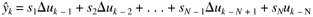 which is written in the form 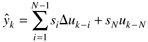 where 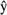k is the model prediction at time step k, and uk – N is the manipulated input N steps in the past. Note that the model-predicted output is unlikely to be equal to the actual measured output at time step k. The difference between the measured output (yk) and the model prediction is called the additive disturbance. 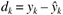 The "corrected prediction" is then equal to the actual measured output at step k, 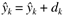 Similarly, the corrected predicted output at the first time step in the future can be found from 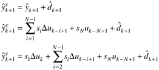 So, for the jth step into the future, we find 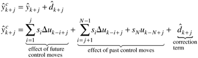 and we can separate the effects of past and future control moves 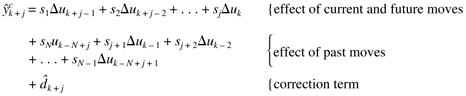 The most common assumption is that the correction term is constant in the future (this is the "constant additive disturbance assumption"): 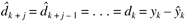 Also, realize that there are no control moves beyond the control horizon of M steps, so 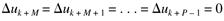 In matrix-vector form, a prediction horizon of P steps and a control horizon of M steps, yields 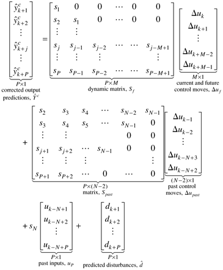 which we write using matrix-vector notation 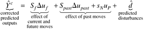 In Equation (16.15) the corrected-predicted output response is naturally composed of a "forced response" (contributions of the current and future control moves) and a "free response" (the output changes that are predicted if there are no future control moves). The difference between the setpoint trajectory, r, and the future predictions is 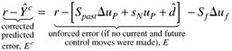 which can be written 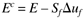 where the future predicted errors are composed of "free response" (E) and "forced response" (–SfDuf) contributions. The least-squares objective function (16.1) is 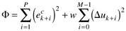 Notice that the quadratic terms can written in matrix-vector form as 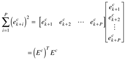 and 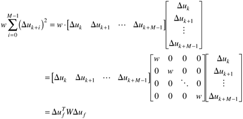 Therefore the objective function can be written in the form 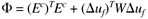 subject to the modeling equation equality constraint (16.17) Substituting (16.17) into (16.21), the objective function can be written 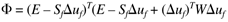 The solution for the minimization of this objective function is (see Appendix 16.2) 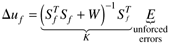 Notice that the current and future control move vector (Duf) is proportional to the unforced error vector (E). That is, a controller gain matrix, K, multiplies the unforced error vector (the future errors that would occur if there were no control move changes implemented). Because only the current control move is actually implemented, we use the first row of the K matrix, and 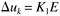 where K1 represents the first row of the K matrix, where 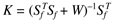 Perhaps it is worth summarizing the steps involved in implementing DMC on a process.
The effect of all of these tuning parameters is now discussed for SISO systems. Model-length and sample-time selection are not independent. The model length should be approximately the "settling time" of the process, that is, the time required to reach a new steady state after a step input change. For most systems, the model length will be roughly 50 coefficients. The sample time is usually on the order of one tenth the dominant time constant, so the model length is roughly the settling time of the process. Prediction and control horizons differ in length. Usually, the prediction horizon is selected to be much longer than the control horizon. This is particularly true if the control weighting factor is selected to be zero. Usually, if the prediction horizon is much longer than the control horizon, the control system is less sensitive to model error. Often P = 20 or so, while M = 1–3. Control weighting is often set to zero if the prediction horizon is much longer than the control horizon. As the control horizon is increased, the control moves tend to become more aggressive so a larger weight is needed to penalize the control moves. Example 16.1: First-Order ProcessHere we study the first-order process, where the time unit is minutes, 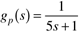 Ordinarily, we would select a sample time of roughly 0.5 minutes, and a model horizon of 50. Here we select a sample time of 1 minute to study the effect of other tuning parameters. The step response coefficients generated from this plant are shown in Figure 16-5. We can see that a model length of at least 20 should be used, since that is when the output is reasonably close to steady state. Figure 16-5. Step response coefficients for the first-order example. Sample time = 1 minute; model length, N = 25.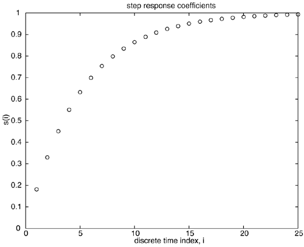 The importance of prediction horizon is shown clearly in Figure 16-6. In both simulations a control horizon of 1 is used. A prediction horizon of 1 results in the setpoint being achieved in 1 time step, while a prediction horizon of 5 yields a much slower response. Notice, however, that P = 1 requires much more control action than P = 5. Although not shown here, the shorter prediction horizon is more sensitive to model uncertainty; these simulations have assumed a perfect model. Figure 16-6. Closed-loop responses to a step setpoint change at t = 1 min, first-order example. Sample time = 1 minute; model length, N = 25; control horizon, M = 1; no weighting on input. Comparison of prediction horizons, P = 5 and P = 1.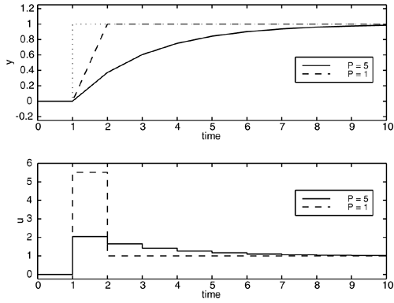 The importance of the model length is shown in Figure 16-7. Since a model length of 6 does not capture the complete dynamics of the process (see Figure 16-5), it effectively results in a model error and poor performance compared with a model length of 25. Figure 16-7. Closed-loop responses to a step setpoint change at t = 1 min, first-order example. Sample time = 1 minute; prediction horizon, P = 5; control horizon, M = 1; no weighting on input. Comparison of model lengths, N = 25 and N = 6.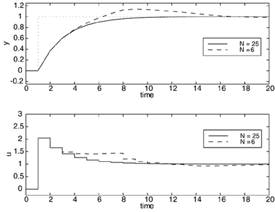 From Equation (16.14), for N = 6, P = 5, M = 1, we find (see Figure 16-5 for the step response coefficients) the following dynamic (Sf) and past move (Spast) matrices. 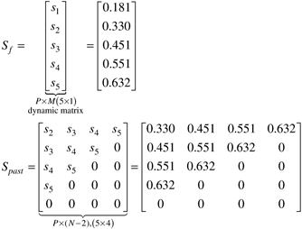 also, selecting a control move weight of 0 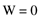 we calculate the feedback gain matrix from Equation (16.23) 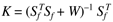 and K1 = K since the control horizon (M) is 1 (the reader should verify these numerical results using MATLAB), the feedback gain matrix is: 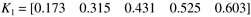 in the simulations shown, the process is initially at steady state when the unit step setpoint change at t = 1 minute is made. Since deviation variables are used, the values of all previous manipulated inputs and outputs are 0. The unforced error vector, E, from Equation (16.16) is (we have transposed it to a row vector to save space) 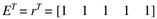 so the first control move, after the setpoint change is made is 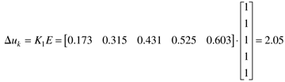 which is consistent with the first control move shown in Figure 16-7. Example 16.2: Van de Vusse ReactorConsider the van de Vusse reactor problem covered in Module 5. The continuous state space model is 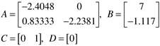 where the measured state (output) is the concentration of the second component and the manipulated input is the dilution rate. The manipulated input-output process transfer function for the reactor is 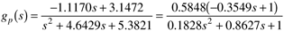 Step Response ModelThe discrete step response model is shown in Figure 16-8, for a sample time of 0.1 minute. Notice that a model length of at least 35 is needed to capture the complete dynamic behavior. Figure 16-8. Step response coefficients for the van de Vusse example. Sample time = 0.1 minutes, model length, N = 50.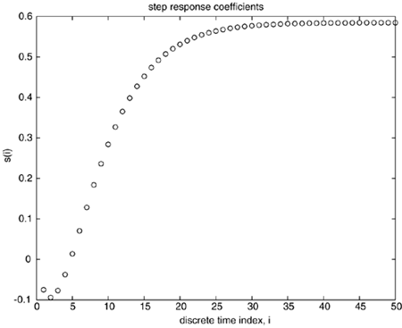 Effect of Prediction HorizonA sample time of 0.1 minute, a model length of N = 50, and a control horizon of M = 1 are used in the following simulations. For this particular example, the prediction horizon does not appear to have an appreciable effect, as shown in Figure 16-9; the setpoint tracking performance is roughly the same for prediction horizons of P = 10 and 25. There is a lower limit, however, to the length of the prediction horizon that can be used. A prediction horizon of 7 or less results in an unstable closed-loop system, as shown in Figure 16-10. This is not due to any model error, since we have assumed a perfect model in these simulations. If the prediction horizon is too short, the initial step response coefficients dominate. Since these are negative while the later coefficients are positive (corresponding to a positive process gain), the prediction is really in error. The effect is the same as using a PID controller with a controller gain that is the wrong sign. Figure 16-9. Closed-loop responses to a step setpoint change, van de Vusse example. Sample time = 0.1 minute; model length, N = 50; control horizon, M = 1; no weighting on input. Comparison of prediction horizons, P = 10 and P = 25.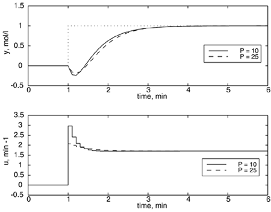 Figure 16-10. Closed-loop responses to a step setpoint change, van de Vusse example. Sample time = 0.1 minute; model length, N = 50; control horizon, M = 1; no weighting on input. Comparison of prediction horizons, P = 7 and P = 8.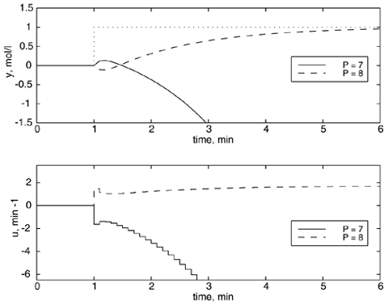 |
| [ Team LiB ] |
|